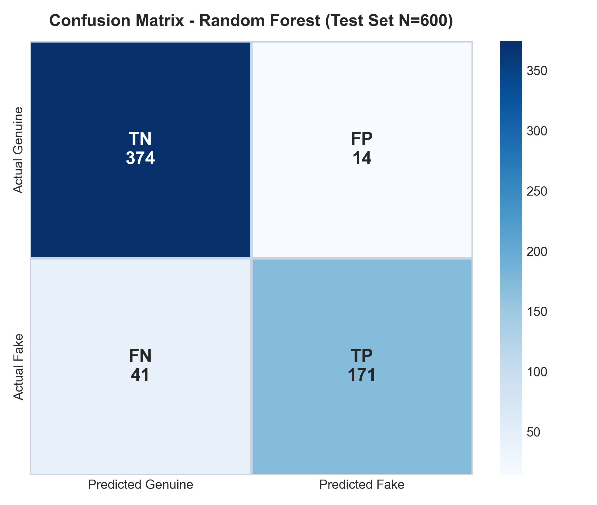
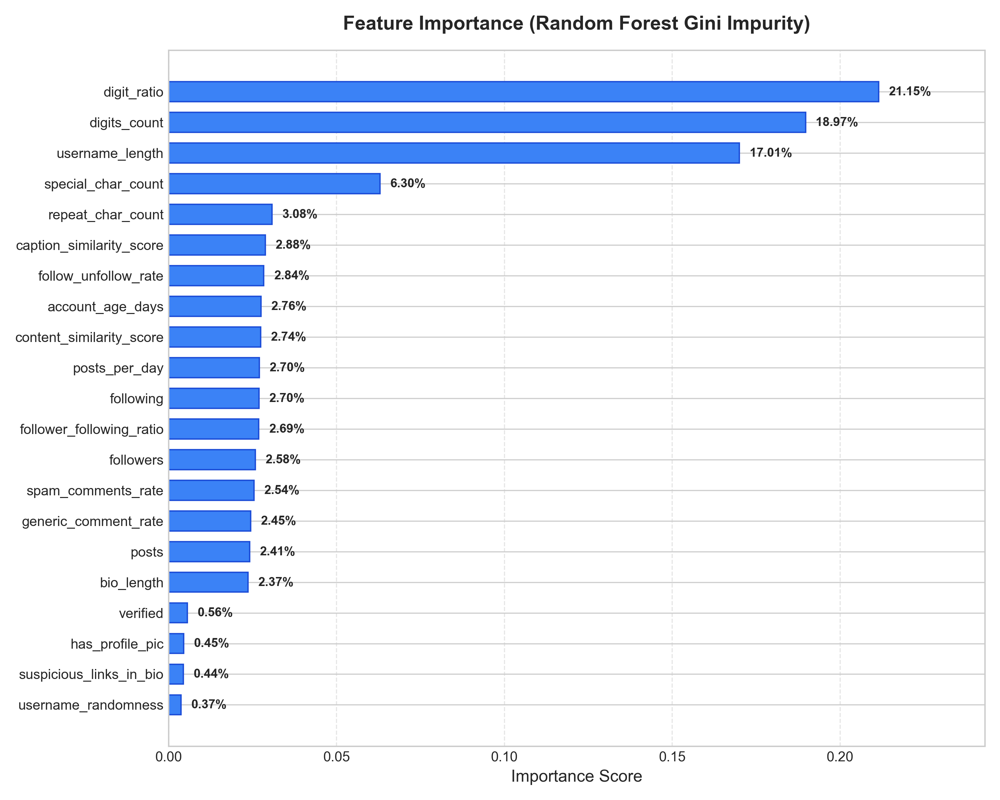
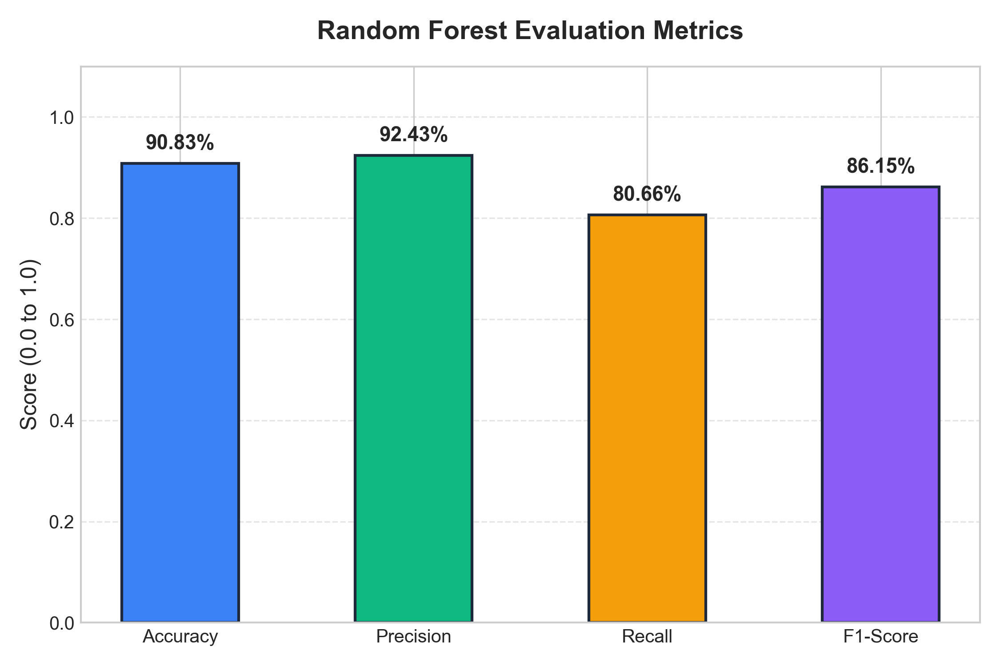
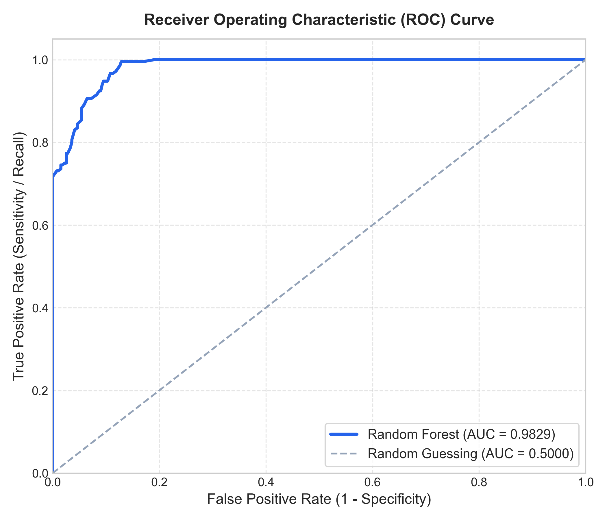
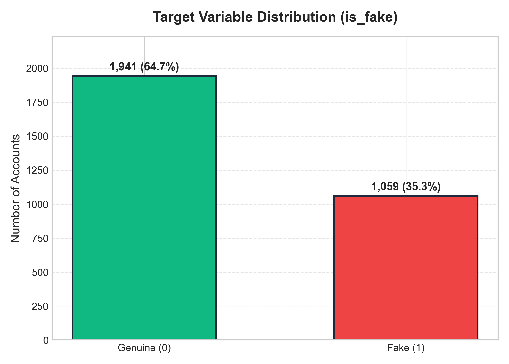
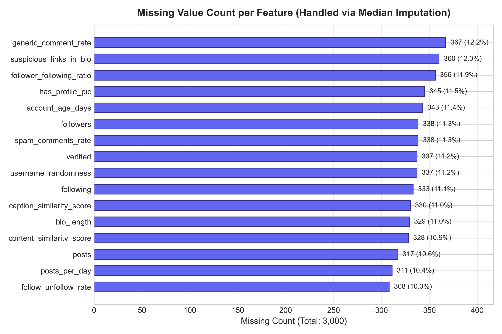

Detection of Fake Social Media Accounts
Using Behavioral Features
A machine learning mini-project that identifies potentially fake, automated, and malicious social media accounts by analyzing username morphology, engagement ratios, posting velocity, and behavioral footprints across a dataset of 3,000 records.
Interactive Account Authenticity Predictor
Test custom accounts or choose a pre-configured persona. The browser executes client-side Random Forest decision trees trained on behavioral attributes.
Computed automatically from followers and following metrics.
Actual Project Outputs & Visualizations
All visualizations displayed below were generated directly from the 3,000-record dataset using the project's Random Forest model and evaluation pipeline.

Confusion Matrix
Classification outcomes on the held-out test set (N=600). Demonstrates 374 True Genuine and 171 True Fake predictions with only 14 False Positives.

Feature Importance Analysis
Gini impurity importance across all 21 features. Highlights digit_ratio (21.15%), digits_count (18.97%), and username_length (17.01%) as primary discriminators.

Evaluation Metrics Comparison
Summary of the four primary classification metrics: Accuracy (90.83%), Precision (92.43%), Recall (80.66%), and F1-Score (86.15%).

ROC Curve (AUC = 0.957)
True Positive Rate versus False Positive Rate across classification thresholds, illustrating strong discriminative separation against random guessing.

Class Distribution (is_fake)
Balance between genuine accounts (1,941 records, 64.7%) and fake accounts (1,059 records, 35.3%) preserved using stratified train-test splitting.

Missing Values & Imputation
Distribution of missing observations across attributes prior to median imputation. All missing numerical columns were cleanly imputed.
Model Evaluation Metrics Table
Granular breakdown of classification performance across classes and validation splits.
Classification Report (Test Set N=600)
| Class | Precision | Recall | F1-Score | Support |
|---|---|---|---|---|
| Genuine (0) | 0.90 | 0.96 | 0.93 | 388 |
| Fake (1) | 0.92 | 0.81 | 0.86 | 212 |
| Overall Accuracy | 90.83% | 600 | ||
| Macro Average | 0.91 | 0.89 | 0.90 | 600 |
| Weighted Average | 0.91 | 0.91 | 0.91 | 600 |
Interactive Confusion Matrix Grid
Actual rows vs Predicted columns for 600 test samples.
Top 10 Influential Behavioral Features (Gini Importance)
Username syntax rules (digit ratio, digit count, username length) represent over 57% of total tree splitting power.
Dataset Structure & Test Samples
Explore records from the test dataset. Select any sample account to immediately populate and test in the live detector.
3,000
Total Profiles
21
Engineered Features
1,941
Genuine (64.7%)
1,059
Fake (35.3%)
| Row ID | Username | Platform | Ground Truth | Model Prediction | Confidence | Action |
|---|
End-to-End Machine Learning Pipeline
Data Ingestion
Loading 3,000 records from Excel corpus spanning Twitter, Instagram, and Facebook profiles.
Missing Value Imputation
Median imputation across incomplete numerical features preserving real feature distribution.
Feature Selection
21 behavioral, social graph, posting frequency, and username heuristic features selected.
Stratified Split
80:20 train-test partition (2,400 training / 600 testing) ensuring class ratio preservation.
Random Forest Model
100 decision trees ensemble trained using Gini impurity and random state 42 reproducibility.
Multi-Metric Evaluation
Evaluation with Confusion Matrix, ROC-AUC (0.957), Precision (92.43%), and F1-score (86.15%).